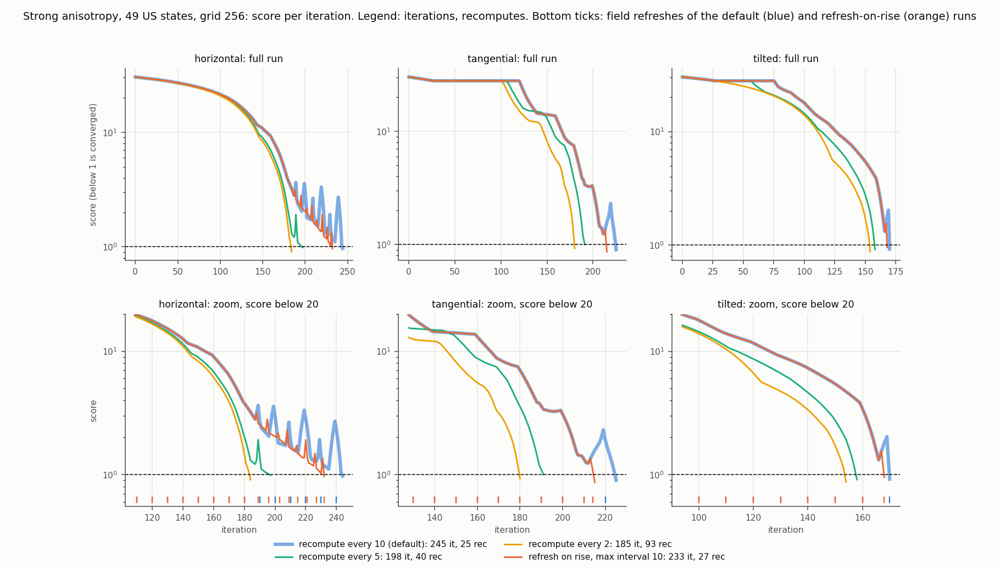
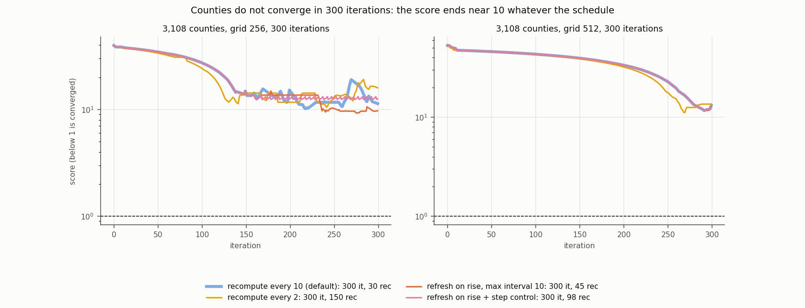
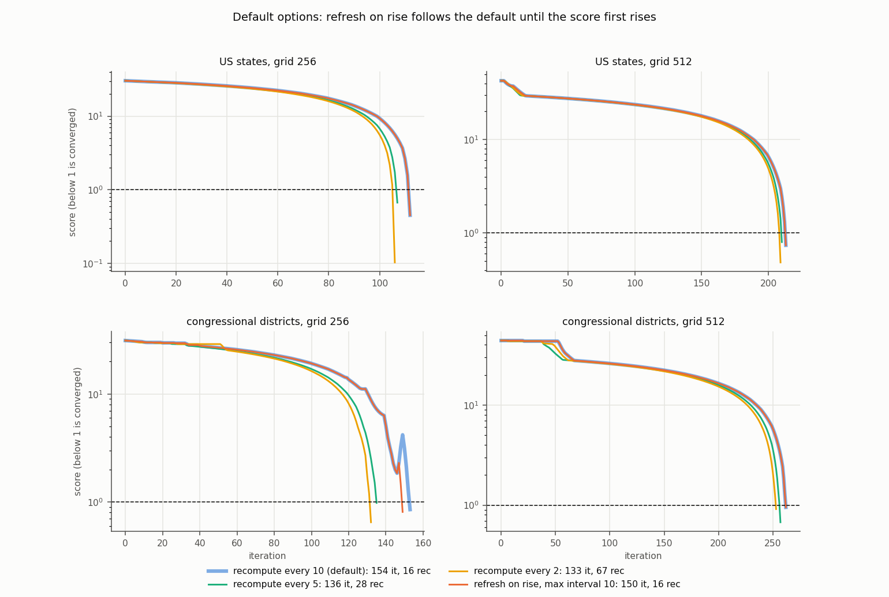

Does refreshing the velocity field when the error rises beat a fixed recompute_every, does step halving with rollback help, and why does the coarse multiresolution level plateau where a single grid converges? Refresh-on-rise is cost-neutral and halves the oscillations; step control does not help; the plateau is a sub-cell region (DC) that no grid cell centre ever lands in.
An investigation, not a change: the prototype lives on the branch above (new MorphOptions fields adaptive_tol_rise, adaptive_min_interval, step_control, step_rollback, step_dt_floor, step_dt_restore; defaults reproduce current behavior). Scripts are in scripts/ (they import the prototype from its worktree path, so check out commit 2650f6a to rerun them). One run per cell, on a machine with load average 0.1 to 5, so wall times are fairly reliable, but the cost model below is the primary metric.
One recompute (rasterize + FFT) relative to one plain advection step (min of 2 timings):
| case | grid 128 | grid 256 | grid 512 | grid 1024 |
|---|---|---|---|---|
| states | 9.2 | 12.0 | 24.2 | 70.9 |
| districts | 18.2 | 20.9 | 23.1 | 46.8 |
| counties | 21.4 | 47.5 | 28.5 | not run |
So cost (in plain steps) = iterations + recomputes x ratio, and a short refresh interval is expensive: recompute_every=2 costs 2 to 4 times the default, =1 costs 5 to 10 times, although they save 20 to 25 % of the iterations.
Score per iteration (below 1 is converged, dashed line), from the per-run histories in data/. Regenerate with uv run python make_figures.py.
fixed R: recompute_every=R.adapt: refresh when the combined score max(mean_log/log2(1+mean_tol), max_log/log2(1+max_tol)) rises by more than tol_rise relative to the previous iteration, once the current field has been used for at least min_interval iterations; recompute_every=10 is the maximum interval.adSC: adapt plus step control: a rise on the first iteration after a fresh field halves dt (floor dt/8), rolls back to the best or previous iterate and forces a refresh; a successful refresh multiplies dt by 1.5 up to the original.Columns: status, iterations, recomputes, rises (total / once the score is below 20), final mean / max error %, best score (below 1 is converged), cost in plain steps.
At grid 256 and 512 the default run does not oscillate; every adaptive and step-control variant is identical to fixed10.
| grid | policy | it | rec | rises | mean / max % | best | cost |
|---|---|---|---|---|---|---|---|
| 256 | fixed10 | 113 | 12 | 0 | 0.32 / 4.4 | 0.45 | 257 |
| 256 | fixed5 | 108 | 22 | 0 | 0.43 / 6.6 | 0.67 | 372 |
| 256 | fixed2 | 107 | 54 | 0 | 0.15 / 1.0 | 0.10 | 755 |
| 256 | fixed1 | 106 | 106 | 0 | 0.60 / 7.1 | 0.72 | 1378 |
| 512 | fixed10 | 214 | 22 | 0 | 0.50 / 7.3 | 0.74 | 746 |
| 512 | fixed5 | 211 | 43 | 0 | 0.66 / 7.9 | 0.80 | 1252 |
| 512 | fixed2 | 210 | 105 | 0 | 0.42 / 4.7 | 0.48 | 2751 |
| 512 | fixed1 | 209 | 209 | 0 | 0.87 / 8.6 | 0.86 | 5267 |
Horizontal (theta = 0):
| policy | it | rec | rises | mean / max % | best | cost |
|---|---|---|---|---|---|---|
| fixed10 | 245 | 25 | 17 / 17 | 1.00 / 9.7 | 0.97 | 545 |
| fixed5 | 198 | 40 | 2 | 1.04 / 9.9 | 0.99 | 678 |
| fixed2 | 185 | 93 | 0 | 0.52 / 9.0 | 0.91 | 1301 |
| fixed1 | 183 | 183 | 0 | 0.35 / 8.8 | 0.89 | 2379 |
| adapt tol 0 | 231 | 27 | 8 | 1.27 / 9.7 | 0.97 | 555 |
| adapt tol 1 % | 233 | 27 | 9 | 1.30 / 9.6 | 0.96 | 557 |
| adapt tol 5 % | 233 | 27 | 9 | 1.30 / 9.6 | 0.96 | 557 |
| adSC (all variants) | 231 to 233 | 27 | 8 to 9 | as adapt | as adapt | 555 to 557 |
Tangential:
| policy | it | rec | rises | mean / max % | best | cost |
|---|---|---|---|---|---|---|
| fixed10 | 226 | 23 | 10 | 1.42 / 8.9 | 0.90 | 502 |
| fixed5 | 192 | 39 | 0 | 1.61 / 10.0 | 1.00 | 660 |
| fixed2 | 181 | 91 | 0 | 1.49 / 9.2 | 0.92 | 1273 |
| fixed1 | 180 | 180 | 0 | 1.52 / 9.2 | 0.92 | 2340 |
| adapt tol 0, min 1 | 222 | 24 | 3 | 1.85 / 9.2 | 0.92 | 510 |
| adapt tol 1 %, min 1 | 216 | 23 | 4 | 1.99 / 8.6 | 0.86 | 492 |
| adSC tol 1 %, min 1 (best or prev) | 216 | 23 | 4 | 1.99 / 8.6 | 0.86 | 492 |
Tilted (theta = pi/6):
| policy | it | rec | rises | mean / max % | best | cost |
|---|---|---|---|---|---|---|
| fixed10 | 171 | 18 | 3 | 1.74 / 9.1 | 0.92 | 387 |
| fixed5 | 159 | 32 | 0 | 0.59 / 9.1 | 0.91 | 543 |
| fixed2 | 155 | 78 | 0 | 0.56 / 8.6 | 0.87 | 1091 |
| fixed1 | 155 | 155 | 0 | 0.42 / 7.2 | 0.73 | 2015 |
| adapt tol 0 or 1 %, min 1 | 169 | 18 | 1 | 1.10 / 9.5 | 0.95 | 385 |
| adSC tol 1 %, min 1 (best or prev) | 169 | 18 | 1 | 1.10 / 9.5 | 0.95 | 385 |
| grid | policy | it | rec | rises | mean / max % | best | cost |
|---|---|---|---|---|---|---|---|
| 256 | fixed10 | 154 | 16 | 4 | 1.08 / 8.4 | 0.85 | 488 |
| 256 | fixed5 | 136 | 28 | 0 | 0.78 / 9.8 | 0.98 | 721 |
| 256 | fixed2 | 133 | 67 | 0 | 0.28 / 6.4 | 0.65 | 1533 |
| 256 | fixed1 | 131 | 131 | 0 | 0.27 / 2.9 | 0.30 | 2869 |
| 256 | adapt tol 0 or 1 %, min 1 | 150 | 16 | 2 | 1.07 / 8.0 | 0.81 | 484 |
| 512 | fixed10 | 263 | 27 | 0 | 0.60 / 9.5 | 0.95 | 887 |
| 512 | fixed5 | 258 | 52 | 0 | 0.27 / 6.6 | 0.67 | 1459 |
| 512 | fixed2 | 254 | 127 | 0 | 0.55 / 9.1 | 0.91 | 3188 |
| 512 | fixed1 | 253 | 253 | 0 | 0.61 / 9.1 | 0.91 | 6097 |
| 512 | adapt and adSC | 263 | 27 | 0 | as fixed10 | 887 |
The best score is about 10 (max error about 200 %) for every policy, so the plateau does not depend on the schedule.
| grid | policy | rec | rises | best score | cost | rollbacks |
|---|---|---|---|---|---|---|
| 256 | fixed10 | 30 | 42 | 10.2 | 1725 | 0 |
| 256 | fixed5 | 60 | 44 | 10.6 | 3150 | 0 |
| 256 | fixed2 | 150 | 44 | 10.5 | 7425 | 0 |
| 256 | fixed1 | 300 | 58 | 10.4 | 14550 | 0 |
| 256 | adapt tol 0, min 1 | 45 | 25 | 9.2 | 2438 | 0 |
| 256 | adapt tol 1 %, min 2 | 33 | 11 | 11.5 | 1868 | 0 |
| 256 | adapt tol 5 %, min 2 | 31 | 42 | 9.8 | 1772 | 0 |
| 256 | adSC tol 1 %, min 1, rollback to best | 98 | 112 | 12.3 | 4955 | 27 |
| 256 | adSC tol 1 %, min 1, rollback to previous | 43 | 36 | 9.9 | 2342 | 8 |
| 256 | adSC tol 0, min 1, rollback to best | 108 | 84 | 12.3 | 5430 | 10 |
| 512 | fixed10 | 30 | 5 | 11.7 | 1155 | 0 |
| 512 | fixed5 | 60 | 10 | 10.4 | 2010 | 0 |
| 512 | fixed2 | 150 | 10 | 11.1 | 4575 | 0 |
| 512 | fixed1 | 300 | 1 | 11.9 | 8850 | 0 |
| 512 | adapt tol 0, min 1 | 36 | 7 | 11.6 | 1326 | 0 |
| 512 | adapt tol 1 %, min 2 | 32 | 5 | 11.7 | 1212 | 0 |
| 512 | adapt tol 5 %, min 2 | 30 | 5 | 11.7 | 1155 | 0 |
| 512 | adSC tol 1 %, min 1 (best or prev) | 32 | 5 | 11.7 | 1212 | 0 |
| 512 | adSC tol 0, min 1, rollback to best | 36 | 4 | 11.6 | 1326 | 4 |
Best score within a recompute budget, grid 256: within 10 / 20 / 30 recomputes, fixed10 gives 27.5 / 11.6 / 10.2, fixed2 gives 37 / 35 / 32, fixed1 gives 38 / 37 / 36, adapt tol 0 min 1 gives 27.5 / 12.3 / 9.5. Grid 512 within 30 recomputes: fixed10 11.7, fixed5 39, fixed2 45, fixed1 47, every adaptive variant 11.7.
Levels 3 and 4 gave identical results because the finest levels are never reached.
| data | policy | per-level result | total cost |
|---|---|---|---|
| states | fixed10, adapt, adSC (all variants) | 128: completed at 300 (flat at score 13.6, max error 265 %); 256: converged in 16 | 616 (316 iterations, 32 recomputes) |
| states | fixed5 | converges at level 128 (62 iterations, 13 recomputes) | 182 |
| states | fixed2 / fixed1 | converges at level 128 | 324 / 561 |
| districts | fixed10 | 128: completed at 300 (min score 2.2); 256: converged in 14 | 902 |
| districts | fixed5 / fixed2 | 128 and 256 completed, 512 converged | 3084 / 6716 |
| districts | fixed1 | 128 completed, 256 converged | 6045 |
| districts | adapt tol 0, min 1 | converged at level 128 in 210 iterations, 28 recomputes | 720 |
| districts | adapt tol 1 % or 5 %, min 2 | converged at level 128, 230 iterations, 35 recomputes | 867 |
| districts | adSC (prev or best) | 240 to 259 iterations, 41 to 42 recomputes | about 1005 |
The states multiresolution level 128 stays flat at a score of 13.6 for 300 iterations, while a single run with grid_size=128 converges in 63 iterations. The options are not the difference (MorphOptions() defaults, preset_balanced and preset_balanced with area_scale=1e-6 give the same result in both setups). The two grids differ slightly: the single grid is 128 x 88 with 68.2 x 68.7 km cells, the multiresolution grid is 128 x 89 with square 68.0 km cells.
The failing region is DC:
| setup | worst region | area | target |
|---|---|---|---|
| multiresolution level 128, after 300 iterations | DC, error -265 % | 0.17 cells (771 km2) | 3.64 cells (16,871 km2) |
| single grid 128, after 63 iterations | ID, error -8.3 % (DC on target) | DC 3.60 cells | 3.64 cells |
DC starts at 0.04 cells and contains no grid cell centre in either grid, so the density rasterization (cell-centre sampling) cannot see it and only the flow of its neighbors changes its area. In the single grid DC grows past a cell centre around iteration 25 (0.14 cells at iteration 21, 1.50 at 31), becomes visible, and reaches its target by iteration 63. In the multiresolution grid it creeps to 0.17 cells and never contains a centre, so it stays invisible and the run plateaus. The plateau is therefore decided by grid alignment relative to a sub-cell region, not by the schedule or the stall rule. This is the cell-centre sampling in #95; the missing warning for regions smaller than the coarsest grid is #93; and the error floor in #87 is why a "converged" single run can hide the same problem.
1. Lowest total cost at matched error: recompute_every=10, or adaptive refresh with 10 as the maximum interval. Adaptive stays within +/-3 % of fixed10 on every converging single-grid case (horizontal 555 vs 545, tangential 492 to 510 vs 502, tilted 385 vs 387, districts 256 484 vs 488) and is identical where there are no rises. 2. Adaptive refresh reduces the oscillations but does not remove them: rises once the score is below 20 go from 17 to 8 to 9 (horizontal), 10 to 3 to 4 (tangential), 3 to 1 (tilted), 4 to 2 (districts 256). A rise is only visible after the stale field has caused it, so about one rise per cycle remains. Only recompute_every of 2 or 1 gives zero rises on the anisotropy runs, at 2.3 to 2.8 and 5 to 10 times the cost. 3. Step control is not needed: rollbacks are 0 in every converging case, because the rise comes several iterations after a refresh, not on its first iteration. On counties it fires (8 to 27 rollbacks) and rolling back to the best iterate is harmful (cost 4955 to 5430, best score 12.3 against 10.2). It is also dangerous in the strong-anisotropy runs, where the best score is the early transient around iteration 26 to 28. 4. tol_rise (0, 1 %, 5 %) and the minimum interval (1 to 3) barely matter; tol 0 to 1 % with minimum interval 1 is a reasonable choice. 5. Fixed recompute_every=5 removes most oscillations and saves 10 to 20 % of the iterations, at 1.2 to 1.5 times the cost of fixed10 at grid 256 (1.7 times at grid 512). 6. The counties plateau and the coarse multiresolution plateaus are independent of the refresh schedule.
recompute_every) is a few lines and safe; alternatively document recompute_every=5 as the quality setting.
Strong anisotropy, 49 states, grid 256. Top: full runs. Bottom: zoom once the score is below 20, with the field refreshes of the default (blue) and refresh-on-rise (orange) runs as ticks. The default run (thick blue) hides behind the orange line wherever the two are identical. Refresh on rise removes about half of the spikes; fixed intervals of 5 and 2 remove most or all of them.

3,108 counties at grid 256 and 512, 300 iterations. No policy converges; the score ends near 10 whatever the schedule, and step control with rollback to the best iterate is the one that keeps the curve flat at a worse value at grid 256.

Default options, states and districts at grid 256 and 512. Refresh on rise follows the default until the score first rises (districts at grid 256 is the one case with a rise).